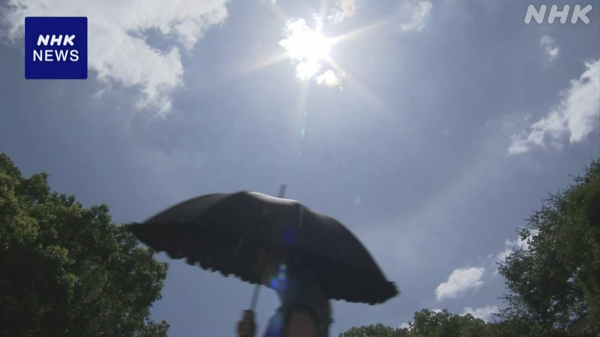
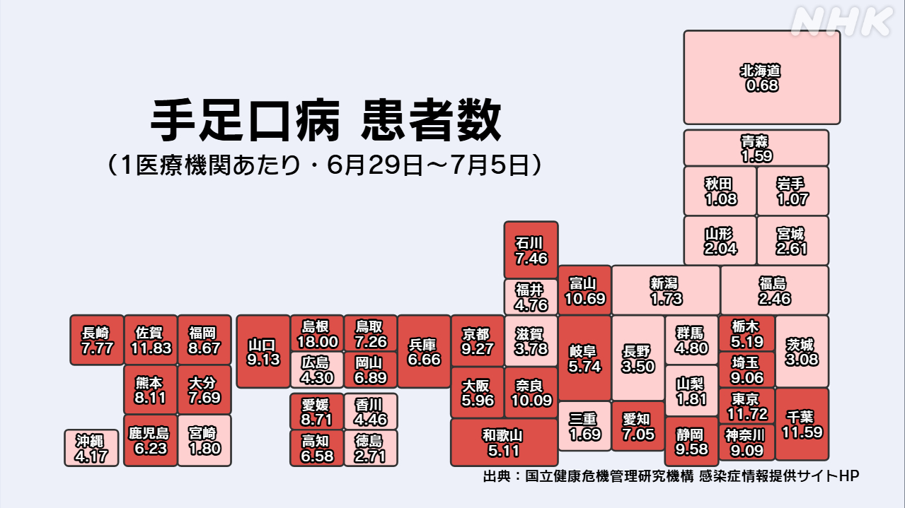
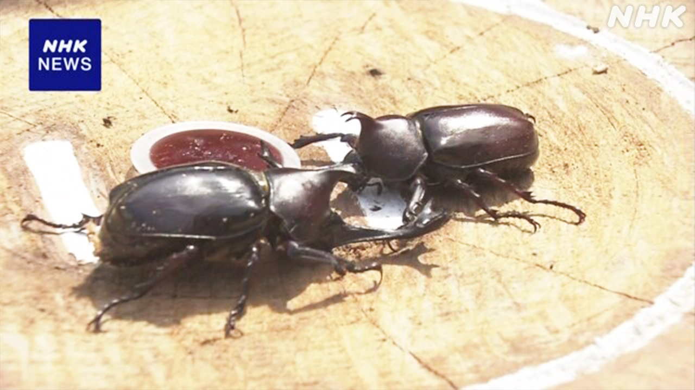

最新ニュース
1️⃣ たくさんの場所で35℃以上 熱中症に気をつけて

14日は、九州から関東地方まで厳しい暑さでした。
静岡県の浜松市や高知県の四万十市では、38℃以上になって危険な暑さになりました。東京都や福岡県などたくさんの場所で35℃以上になりました。
15日は、九州から東北地方まで14日と同じくらい暑くなりそうです。
専門家は、梅雨が終わった後や、梅雨の間でも晴れて急に暑くなったときは、体が暑さに慣れていないため特に熱中症に気をつけるようにと言っています。エアコンを使ったり水を飲んだりして、熱中症にならないようにしてください。
2️⃣ 「手足口病」になった子どもが日本中で増えている

小さい子どもに多い病気「手足口病」になる人が、増えています。
「手足口病」は、ウイルスが原因でうつって、手や足、口の中などに発疹ができます。
国の研究所によると、今月5日までの1週間に、この病気だとわかった子どもは1万5845人でした。前の週の1.5倍ぐらいです。
島根県や東京都など日本の27の都や県などで、とくに気をつけるレベルだといっています。
専門家は、これから手足口病の人がもっと増えるかもしれないので、手をよく洗うなどできることをしっかりしてほしいと話しています。
3️⃣ EU「子どもの年齢に合わせたSNSの使い方を決めたい」
子どものSNSの利用が最近、いろいろな国で問題になっています。
EUは、子どもの年齢に合わせたSNSの使い方を決めたいと考えています。
13日、専門家からのアドバイスを受けました。
専門家は、3歳から12歳の子どもは、親や教育する人がいるときだけ時間を決めて使うのがいいと言っています。13歳から18歳の子どもは、長い時間ずっと見ることができないようにするなど安全を考えたサービスだけを使うのがいいと言っています。
EUは、子どものSNSの使い方を細かく決めて、早ければことしの秋に発表すると言いました。
4️⃣ 高知市でカブトムシの相撲大会

カブトムシという虫は、力が強くて子どもたちに人気があります。
強いカブトムシを決める相撲大会が、12日に高知市でありました。16人の子どもが自分のカブトムシを持って集まりました。
カブトムシは、丸くかいた土俵の上で相撲をします。土俵の外に出たり、飛んでいったりすると負けです。
子どもたちは「がんばれ!」「いけー!」と応援しました。
優勝したのは、5歳の女の子のカブトムシでした。女の子は「うれしいです。カブトムシに『がんばったね』『ありがとう』と伝えたいです」と話していました。
- 〜まで
- 〜から〜まで
- 〜から
- 〜以上
- 〜になる
- 〜など
- 〜や〜など
- 〜くらい / 〜ぐらい
- 〜そうだ
- 〜ため
- 〜ように
- 〜ている / 〜でいる
- 〜後 / 〜あと
- 〜ても / 〜でも
- 〜ようにする
- 〜ならない
- 〜てください / 〜でください
- 〜中
- 〜ところ
- 〜によると
- 〜こと
- 〜かもしれない / 〜かもしれません
- 〜ので
- 〜方
- 〜だけ
- 〜がある / 〜がいる
- 〜ず / 〜ずに
- 〜ことができる
- 〜という
- 〜かい / 〜だい
- 〜たり〜たりする
vebaev.github.io
Generated: 2026-07-14 12:14:08 UTC